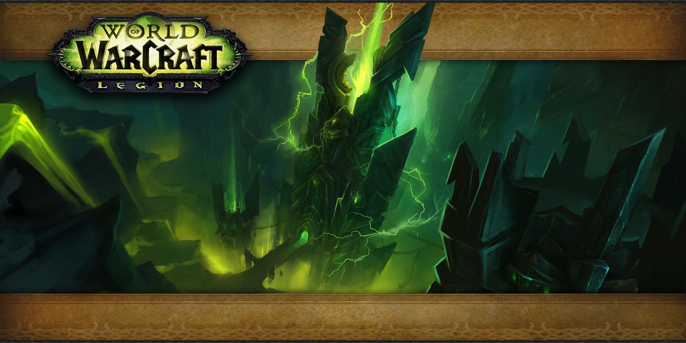
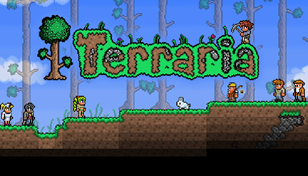

Welcome to WoWpros guides!
This weeks news

Destiny two is having their free trial period! If anyone has been unsure whether or not this game is worth the
75$ price tag, now is your time to really try it out! From our point of view, the game is wonderful! Many aspects of
it make it wonderful, but its peak is hit when players engage in pve with random strangers. That way new players can make tons
of new friends! Destiny has a wonderful array of character selection options and three different races: Human, Awoken, and Exo. Once you've chosen a race, you are prompted to change the skin colour, eye colour, and hair colour, with an additional options based on the race you have chosen.gt
Last weeks news

World of warcrafts newest raid, Antorous was realeased last Tuesday, November 28th, 2017. With it, the heroes of azeroth banded together to defeat possibly the greatest threat known to the Warcraft universe, the Burning Legion. While it is unclear where the dark titan sargeras is
throughout the raid, it is clear that we fight another known entity, the titan of the dreani world Argus. The first wing of the raid is split into four bosses, all with their own unique mechanics and abilites. The first few bosses drop non-teir armour, therefore more advanced players
will probably want to save their bonus rolls for the next seven bosses that do. This is the last raid before the upcoming expansion that will have teir specific gear per class.
Old news

Terraria is still holding out on its fans for the logn awaited sequel to the first game: Terraria Otherworld. The team works long and hard clearly, however they still have not given updates since April 4th. With their fans on edge, and only slightly
impatient, how will the team respond? The long silence has also raised the question of, has the game been put on the backburner, or just entirely forgotten? If this is the case, there would be a huge disappointment within the rest of the community, who have
been waiting month after month for the hopeful return of the glorious 2D game.